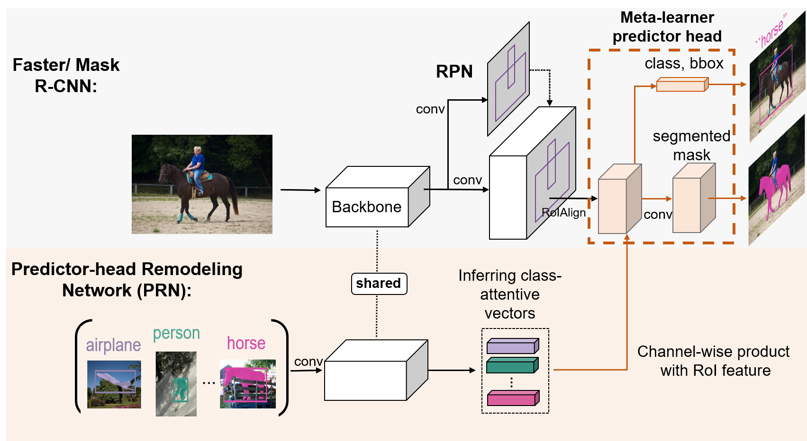
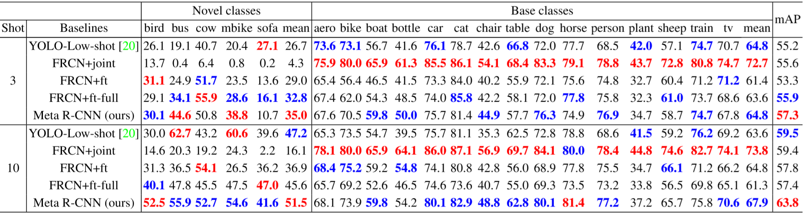
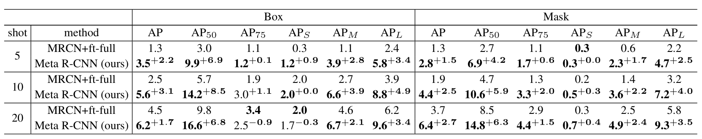

Meta R-CNN: Towards General Solver for Instance-level Low-shot Learning
1Sun Yat-sen University · 2DarkMatter AI Research
ICCV 2019Abstract
Resembling the rapid learning capability of humans, low-shot learning empowers vision systems to understand new concepts by training with few samples. Leading approaches derived from meta-learning on images with a single visual object. Obfuscated by a complex background and multiple objects in one image, they are hard to promote the research of low-shot object detection/segmentation. In this work, we present a flexible and general methodology to achieve these tasks.
Meta R-CNN

Our Meta R-CNN consists of 1) Faster/Mask R-CNN; 2) Predictor-head Remodeling Network (PRN). Faster/Mask R-CNN receives an image to produce RoI features by taking RoIAlign on the image region proposals extracted by RPN. In parallel, our PRN receives K-shot m-class resized images with their structure labels (bounding boxes / segmentation masks) to infer m class-attentive vectors. Given a class-attentive vector representing class c, it takes a channel-wise soft-attention on each RoI feature, encouraging the Faster/Mask R-CNN predictor heads to detect or segment class-c objects based on the RoI features in the image. As the class c is dynamically determined by the inputs of PRN, Meta R-CNN is a meta-learner.
Low-shot Object Detection

AP and mAP on VOC2007 test set for novel classes and base classes of the first base/novel split. We evaluate the performance for 3/10-shot novel-class examples with FRCN under ResNet-101. RED / BLUE indicate the SOTA / second-best (best viewed in color).
Low-shot Object Segmentation

Low-shot detection and instance-segmentation performance on COCO minival set for novel classes under Mask R-CNN with ResNet-50. The evaluation is based on 5/10/20-shot objects in novel classes.